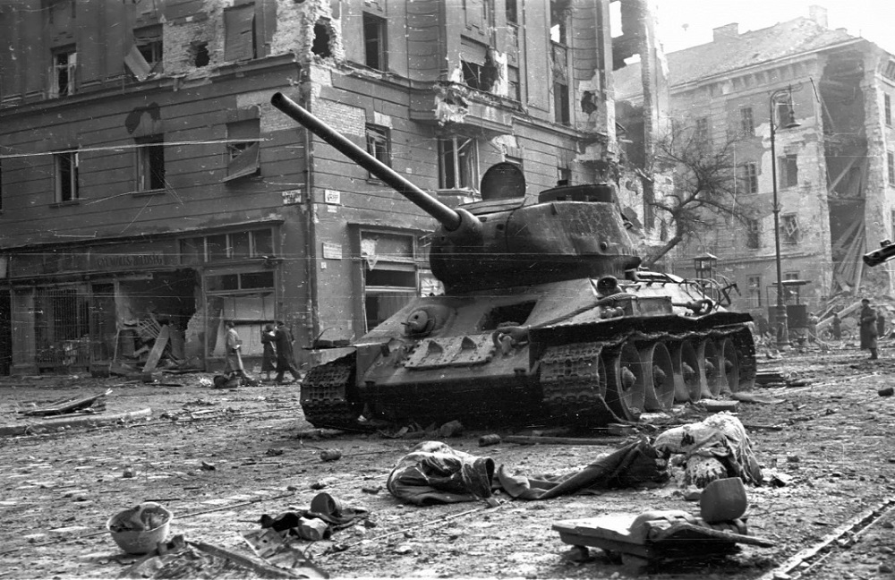

1956-os Forradalom
Haderő különbség
Forradalom első napja
Forradalom után
Események
Fegyverek
Budapesti események
Kezdőlap
Üdvözlünk az oldalon!

Készítette: Tóth Zsanett, Balogh Krisztián, Szolga Zsombor, Bozsán Máté